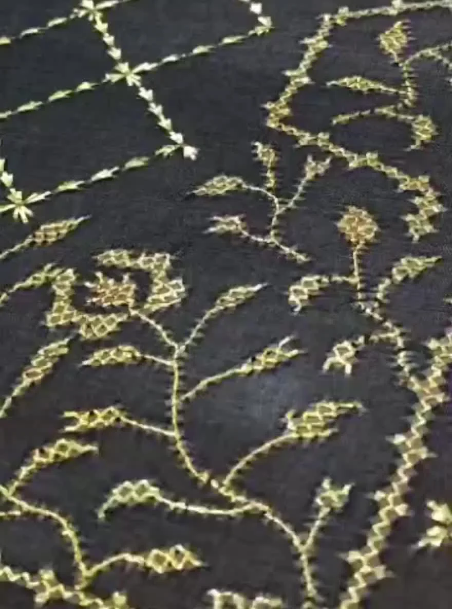
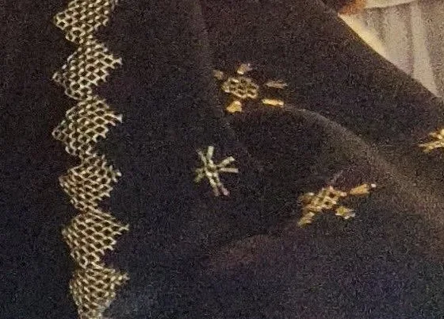
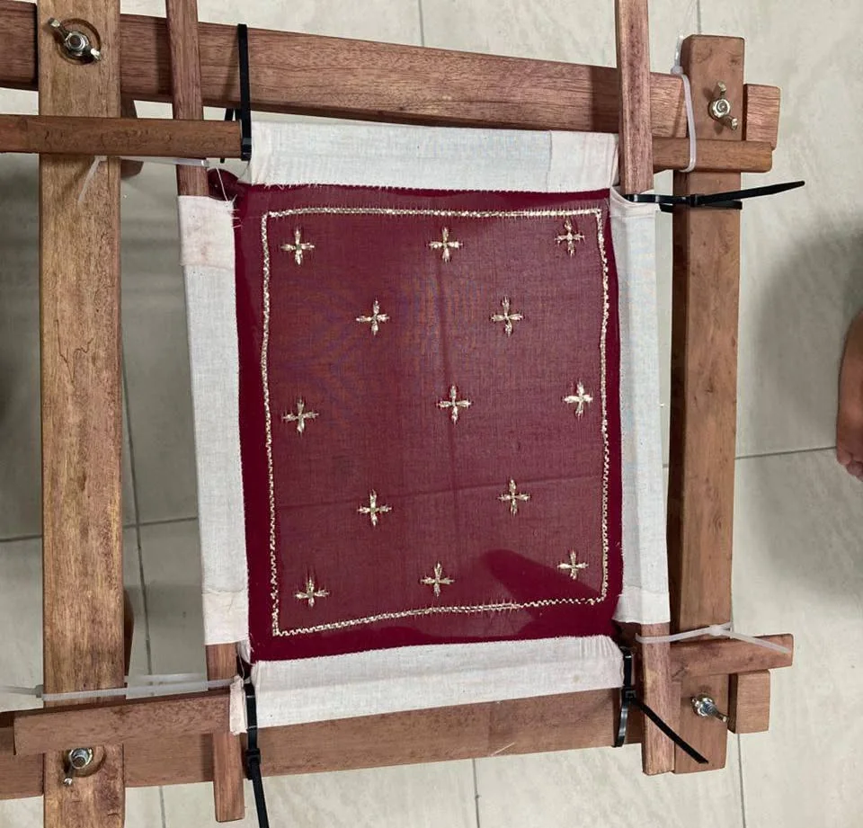
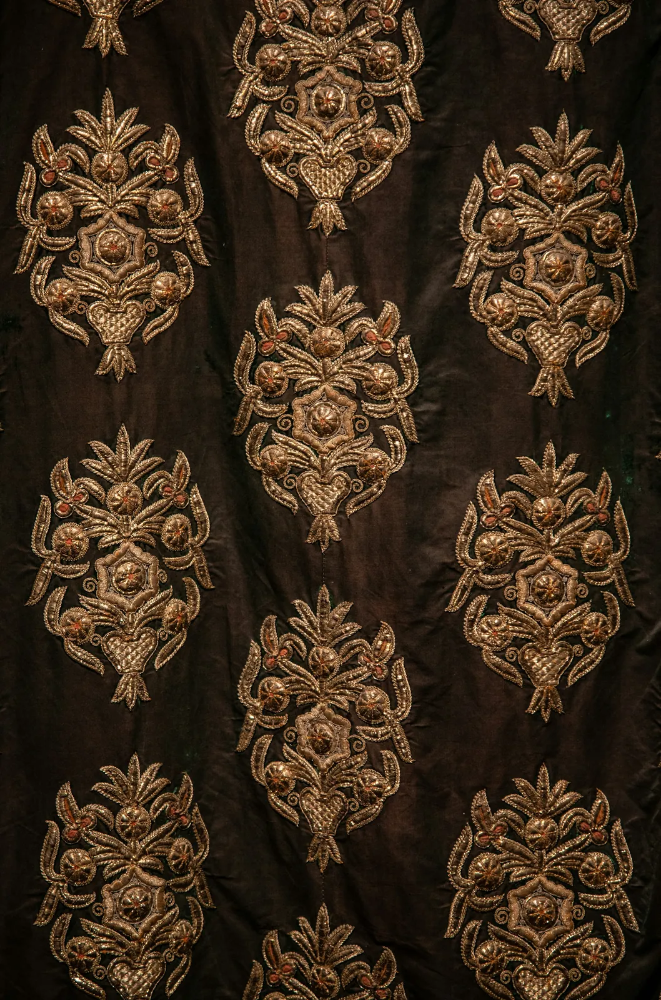
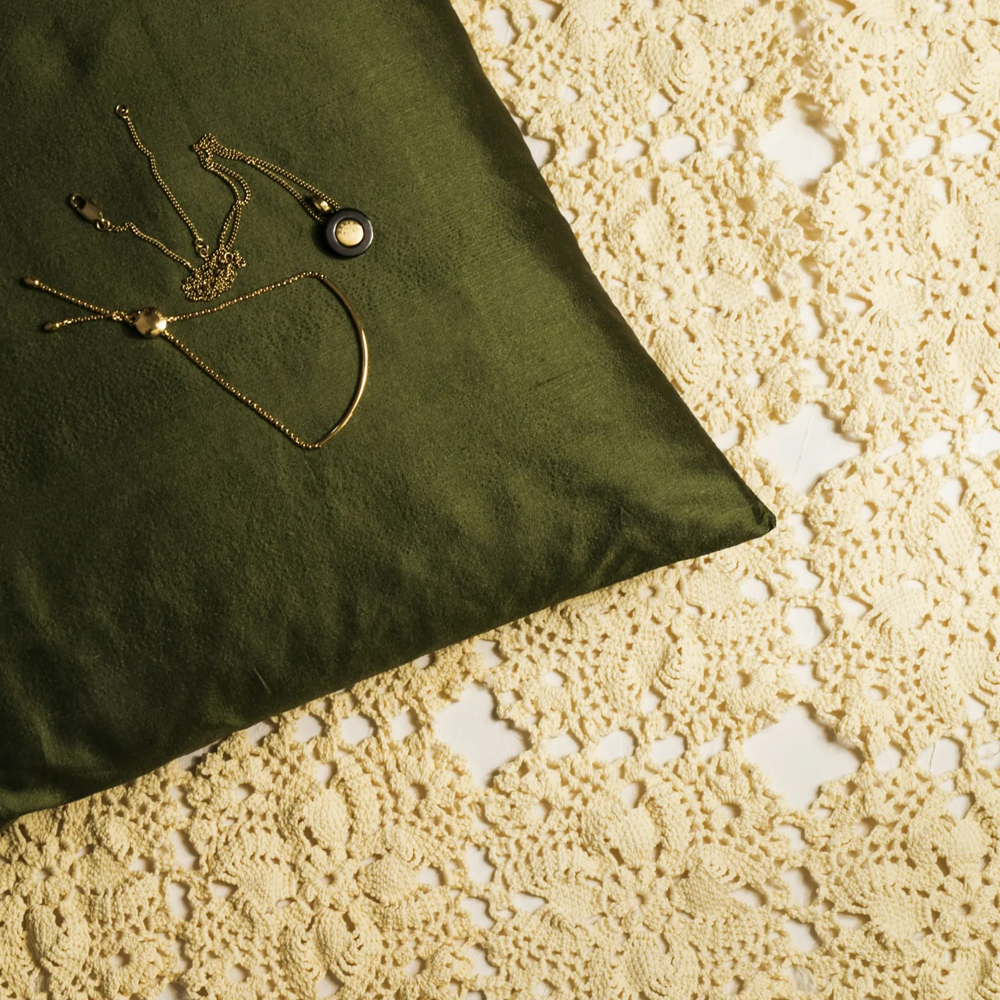
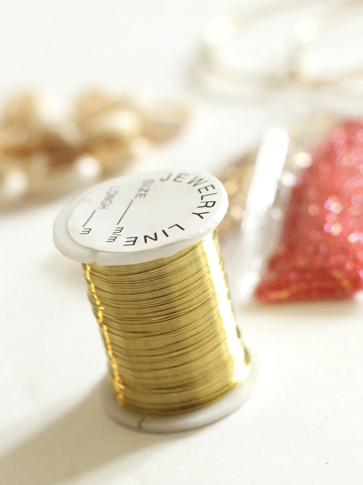

Selayah
Scattered flowers inside a climbing vine border.
Made to order in Sarawak
Every Kilauan piece is stitched by hand once you order it. Browse the forms below, then open any piece to see its details and send an enquiry.
Scattered flowers inside a climbing vine border.

Climbing flowers and an open lattice in gold.

Small stars across the field, a flowing border at the hem.

A lattice border with stars scattered beside it.

A gauze panel worked in gold and framed to hang.

Embroidered to the length of your own table.

Gold-stitched covers for the room you keep for guests.

A small piece of keringkam for a favourite book.
Something else in mind?
Choose your own form, gauze colour and motifs. Norinda will design the piece with you, then stitch it by hand.
Start a commission